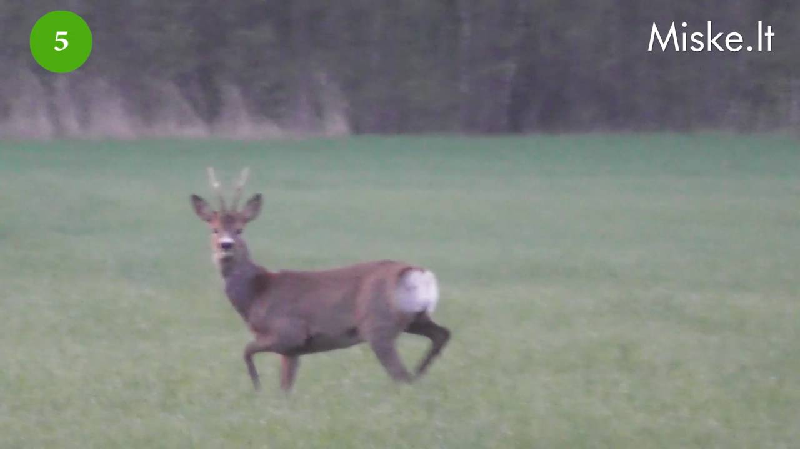
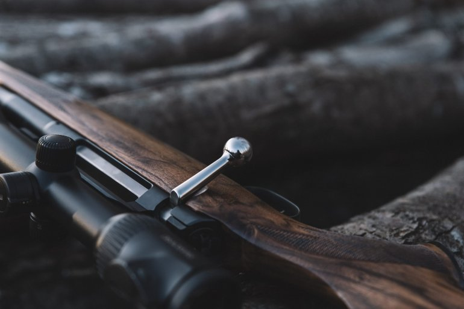

e-medziokle.lt
2020.10.29 07:08

Toggle navigation Ginklai ir šaudmenys Graižtviniai ginklai Lygiavamzdžiai ginklai Ginklai savigynai Pneumatiniai ginklai Lankai ir Svaidyklės Šaudmenys Optiniai prietaisai Optiniai taikikliai Žiūronai Kolimatoriai Tolimačiai Termovizoriai Naktinio matymo prietaisai Šviečiantys taikikliai - kryptukai Optinių taikiklių laikikliai Optinių taikiklių aksesuarai ir priedai Apranga ir avalynė Apranga Avalynė Aprangos ir avalynės priežiūros priemonės Priedai medžioklei Apsaugos ginklų vamzdžiams Šovinynai Balistinė skaičiuoklė Buožpadžiai Kuprinės, termosai Ginklų priedai Šaudymo stovai - atramos, kėdutės Aksesuarai, dovanos medžiotojams Dėklai ginklams, šovininės, diržai, buožpadžiai Prožektoriai Medžiokliniai peiliai Seifai ginklams Stebėjimo kameros - fotoaparatai Jaukai žvėrims Automatinės šėryklos Bokšteliai, lipynės, palapinės Viliokliai, vilbynės Spąstai, gaudyklės Apsauginės ausinės šaudymui Apsauginiai akiniai Dujiniai balionėliai, teleskopinės lazdos, elektrošokai FEJERVERKAI - PIROTECHNIKA Ginklų, optikų valymo priemonės Alkotesteriai Priedai automobiliams Lėkštelių svaidyklės, stendinės lėkštelės Repelentai Trichineliozės, maro testai Trofėjų priežiūros priemonės Medžiotojo virtuvei Prekės šunims Dovanų kuponai (0) ×
Sign In Now
Don't have an account?
×Sign Up Now
By clicking register, I agree to your terms
Plačiau
Plačiau
PreviousAkcijos
Peržiūrėti %Kelnės Seeland Eton Realtree APG
95,00 EUR 129,00 EUR Peržiūrėti %Prožektorius WALTHER PRO PL80
49,00 EUR 72,00 EUR Peržiūrėti %Kelnės Browning XPO PRO
79,95 EUR 229,00 EUR Peržiūrėti %Prožektorius WALTHER PRO PL70R
69,95 EUR 105,00 EUR Peržiūrėti %Graižtvinis šautuvas Voere K15 22 LR
395,00 EUR 600,00 EUR Peržiūrėti %Dvipusė striukė Browning Hells Canyon Pro
139,95 EUR 279,00 EUR Peržiūrėti %Džemperis Seeland William (Olive Grey)
49,95 EUR 119,00 EUR Peržiūrėti %Striukė Seeland Eton Pine Green
99,00 EUR 149,00 EUR Peržiūrėti %Lėkštelių svaidyklė CT101 Do All Outdoors
29,95 EUR 49,99 EUR Peržiūrėti %Striukė Browning Featherlight Primaloft
99,00 EUR 169,00 EUR Peržiūrėti %Marškiniai Seeland Timber Solid (Moss green)
39,99 EUR 70,00 EUR Peržiūrėti %Marškiniai Seeland Kensington (Duffel green)
23,95 EUR 40,00 EUR Peržiūrėti %Marškinėliai Jahti Jakt žali
4,95 EUR 21,00 EUR Peržiūrėti %Megztinis Jari (Burgundy)
69,95 EUR 139,00 EUR Peržiūrėti %Prožektorius Walther Sl66r
74,95 EUR 108,00 EUR Peržiūrėti %Medžiotojo kuprinė
25,00 EUR 39,00 EUR « 1 2 3 »Naujienos
Peržiūrėti NewGinklo valymo virvė Hoppes BoreSnake kal. 9 mm
18,95 EUR Peržiūrėti NewMedžioklinis kostiumas Harkila Hunter Pro Endu
989,00 EUR Peržiūrėti NewPetnešos Harkila Wildboar Pro Tech (Brown/Oran
64,95 EUR Peržiūrėti NewŠoviniai WINCHESTER ZZ CANARD, 12-76, 3,3mm, 3
0,70 EUR Peržiūrėti NewOpt. taikiklio žiedai BLASER Aesthetic Spuhr O
175,45 EUR Peržiūrėti NewKepurė Alaska Hunting (forest brown)
19,00 EUR Peržiūrėti NewMarškinėliai Harkila Wildboar Pro L/S (AXIS M
64,95 EUR Peržiūrėti NewOptikų valymo priemonė Fluna Tec nuo rasojimo
11,95 EUR Peržiūrėti NewŠoviniai WINCHESTER DRYLOK 12-70 35g P2 super
0,79 EUR Peržiūrėti NewMedžioklinis kostiumas Harkila Mountain Hunter
1 289,00 EUR Peržiūrėti NewŠoviniai WINCHESTER kal. 22LR M22 2,6g/40gr RO
0,11 EUR Peržiūrėti NewPulsar Axion XQ38 Termovizorius apsaugai
1 990,00 EUR Peržiūrėti NewDžemperis Seeland Hawker full zip (Pine green)
79,00 EUR Peržiūrėti NewŠoviniai WINCHESTER BUCKSHOT RAZORBACK, 12-70,
3,19 EUR Peržiūrėti NewKepurė Browning Digi Blaze 308121721
18,00 EUR Peržiūrėti NewGinklo valymo virvė Hoppes BoreSnake kal. 308
18,95 EUR « 1 2 3 »Įmonė užsiima didmenine bei mažmenine prekyba. Prekiaujame aukščiausios kokybės bei gerai pasaulyje žinomų prekinių ženklų medžioklės reikmėnimis.
INFORMACIJA
Paslaugos Apie mus D.U.K. Kontaktai Pirkimo sąlygos Privatumo politika Atsiskaitymo būdaiKontaktai
Telefonas
+370 622 69 994 Kupiškis
+370 678 73 111 Vilnius
+370 622 69 994 Internetinė parduotuvė
El. paštas
info@e-medziokle.lt
Parduotuvių adresai
Žemynos g. 1, LT-06126 Vilnius
A. Purėno g. 5, LT-40118 Kupiškis
Stebėkite mus
Užsisakykite naujienlaiškį
© 2019 Visos teisės saugomos
×Sign up for free
Sign in with your account
Naršydami sutinkate su privatumo politika Terms and Conditions
x Naršydami sutinkate su privatumo politika Slapukų politika . Gerai- Superkompaktiškas termovizorius AXION | Medžioklė
- Ančių Medžioklė - Kur pavalgyti? Maisto apžvalgos, kritika ...
- Filmai internetu, filmai online, nemokami filmai
- Medžioklė / The Hunt (2020) online
- Medžioklė - Ūkininko patarėjas
- Prasideda akcija „Medžioklė“ | Miske.lt
- Medžioklė / The Hunt 2020 online lietuvių kalba
- Medžioklė / The Hunt (2020) » Filmai ir serialai online ...
- Medžioklė - vertimai, sinonimai, gramatika, statistika ...
- Žiūrėti Raudonojo Spalio Medžioklė Online nemokamai
- Superkompaktiškas termovizorius AXION | Medžioklė
Medžioklė / The Hunt (2012) BDRip. Kraujas ir šokoladas. Dramos, Romantiniai, Fantastiniai, Siaubo, Filmai. 2007. 1 val 38 min. Kraujas ir šokoladas / Blood and Chocolate (2007) DVDRip.
- Ančių Medžioklė - Kur pavalgyti? Maisto apžvalgos, kritika ...
GERAS FILMAS Medžioklė / The Hunt 2020 online lietuvių kalba nemokamai HD kokybė. Žiūrėkite naujausią filmą NEMOKAMAI. Vienas žiurimiausių filmų Lietuvoje.
- Filmai internetu, filmai online, nemokami filmai
Gero termovizoriaus reikėtų kiekvienam medžiotojui, norinčiam medžioti ne tik sėkmingai, bet ir etiškai. Jis padeda prieš šūvį įsitikinti, ar prie viliojimo vietos priėjusios šernės aukštoje žolėje neseka jaunikliai, kiek apskritai bandoje šernų, kuris didesnis, kuris mažesnis. Su Axion gyvūną galima įžiūrėti ir per gana tankius krūmus, tad galima pasirengti jo ...
- Medžioklė / The Hunt (2020) online
Filmas sukurtas pagal 1984 m. JAV išleistą (ir išverstą į lietuvių kalbą) Tomo Clancy knygą „Raudonojo spalio“ medžioklė“, kuri tapo bestseleriu. Romanas ir filmas sukurti pagal tikrus įvykius.
- Medžioklė - Ūkininko patarėjas
Ančių Medžioklė - maisto apžvalgos, vertinimai ir rekomendacijos. Kažkaip pagalvojau, kad reikėtų prisiminti praėjusį šeštadienį praūžusią We Will Grill fiestą.
- Prasideda akcija „Medžioklė“ | Miske.lt
Prasideda akcija „Medžioklė“ Vakar Aplinkos apsaugos departamentas tauriųjų elnių ir briedžių apsaugai stiprinti intensyviausiu jų rujos metu pradėjo akciją „Medžioklė“. Mat rujodami šie žvėrys įnirtingai ieško naujų teritorijų, patelių, varžovų, todėl nėra tokie budrūs ir gali tapti lengvu brakonierių grobiu.
- Medžioklė / The Hunt 2020 online lietuvių kalba
Miske.lt naujienos medžiotojams, straipsniai apie medžioklę, medžioklės vaizdo įrašai, medžioklės kalendorius, medžioklės įstatymai ir komentarai.
- Medžioklė / The Hunt (2020) » Filmai ir serialai online ...
Vaizdo įrašas pilno filmo "Medžioklė (2020)" įsijungia geroje kokybėje FULL HD 720 ir 1080 nemokamai, be registracijos. Žiūrėti Treileris. Filmas prasidės po trumpos reklamos * Brangūs lankytojai, reklama leistuve nuo mūsų nepriklauso. Atsiprašome...
- Medžioklė - vertimai, sinonimai, gramatika, statistika ...
Filmai internetu ir filmai online. Naujausi serialai, parduotas gyvenimas online, suzeisti pauksciai online
- Žiūrėti Raudonojo Spalio Medžioklė Online nemokamai
Medžioklės reikmenys medžioklė, žvejyba. X. Dėl geresnės Skelbiu.lt paslaugų kokybės naudojame slapukus (angl. cookies). Naršydami toliau, patvirtinate, kad sutinkate su slapukais. Tai bet kada galėsite atšaukti, pakeisdami nustatymus. Skelbiu.lt slapukų politika.
Medžioklė / The Hunt (2012) BDRip. Kraujas ir šokoladas. Dramos, Romantiniai, Fantastiniai, Siaubo, Filmai. 2007. 1 val 38 min. Kraujas ir šokoladas / Blood and Chocolate (2007) DVDRip.
GERAS FILMAS Medžioklė / The Hunt 2020 online lietuvių kalba nemokamai HD kokybė. Žiūrėkite naujausią filmą NEMOKAMAI. Vienas žiurimiausių filmų Lietuvoje.
Gero termovizoriaus reikėtų kiekvienam medžiotojui, norinčiam medžioti ne tik sėkmingai, bet ir etiškai. Jis padeda prieš šūvį įsitikinti, ar prie viliojimo vietos priėjusios šernės aukštoje žolėje neseka jaunikliai, kiek apskritai bandoje šernų, kuris didesnis, kuris mažesnis. Su Axion gyvūną galima įžiūrėti ir per gana tankius krūmus, tad galima pasirengti jo ...
Filmas sukurtas pagal 1984 m. JAV išleistą (ir išverstą į lietuvių kalbą) Tomo Clancy knygą „Raudonojo spalio“ medžioklė“, kuri tapo bestseleriu. Romanas ir filmas sukurti pagal tikrus įvykius.
Ančių Medžioklė - maisto apžvalgos, vertinimai ir rekomendacijos. Kažkaip pagalvojau, kad reikėtų prisiminti praėjusį šeštadienį praūžusią We Will Grill fiestą.
Prasideda akcija „Medžioklė“ Vakar Aplinkos apsaugos departamentas tauriųjų elnių ir briedžių apsaugai stiprinti intensyviausiu jų rujos metu pradėjo akciją „Medžioklė“. Mat rujodami šie žvėrys įnirtingai ieško naujų teritorijų, patelių, varžovų, todėl nėra tokie budrūs ir gali tapti lengvu brakonierių grobiu.
Miske.lt naujienos medžiotojams, straipsniai apie medžioklę, medžioklės vaizdo įrašai, medžioklės kalendorius, medžioklės įstatymai ir komentarai.
Vaizdo įrašas pilno filmo "Medžioklė (2020)" įsijungia geroje kokybėje FULL HD 720 ir 1080 nemokamai, be registracijos. Žiūrėti Treileris. Filmas prasidės po trumpos reklamos * Brangūs lankytojai, reklama leistuve nuo mūsų nepriklauso. Atsiprašome...
Filmai internetu ir filmai online. Naujausi serialai, parduotas gyvenimas online, suzeisti pauksciai online
Medžioklės reikmenys medžioklė, žvejyba. X. Dėl geresnės Skelbiu.lt paslaugų kokybės naudojame slapukus (angl. cookies). Naršydami toliau, patvirtinate, kad sutinkate su slapukais. Tai bet kada galėsite atšaukti, pakeisdami nustatymus. Skelbiu.lt slapukų politika.

